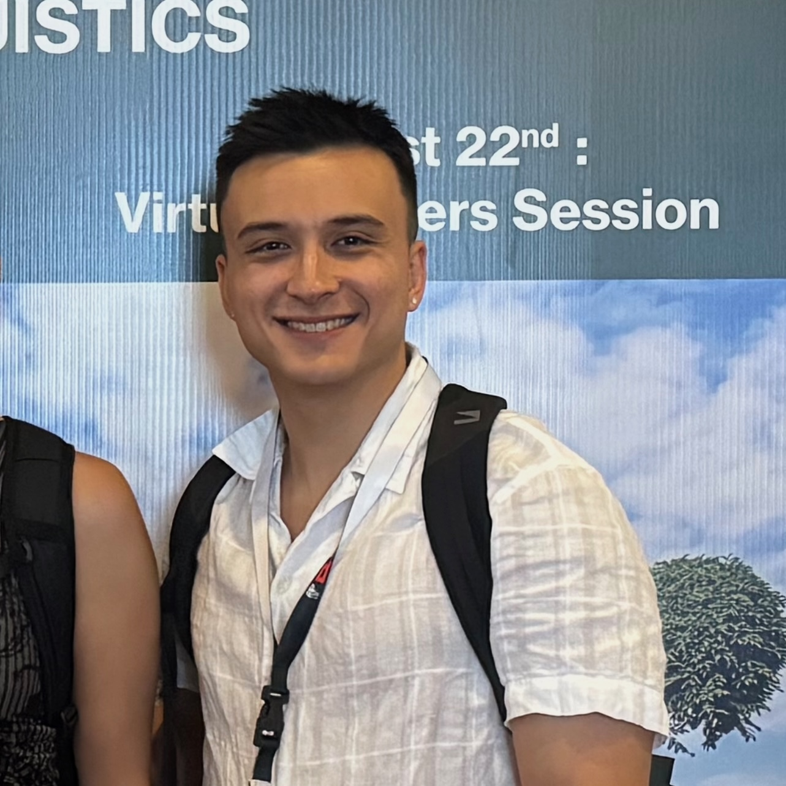

Michael Ginn
/maɪkəl dʒɪn/

I'm a fourth-year Ph.D. student at the University of Colorado studying natural language processing, machine learning, and occasionally linguistics, supervised by Prof. Alexis Palmer and Prof. Mans Hulden.
My Research
My primary research goal is to apply, evaluate, and improve cutting edge machine learning methods for multilingual and low-resource contexts to enable high-quality language technology for all languages. I've trained hundreds of thousands of small models and several large multilingual models, and I've done research on topics like out-of-domain generalization, static embeddings, and data augmentation/synthetic data. In particular, I've worked in the following areas:
LLMs for Language Documentation
Documenting endangered languages is a critical—but very time-consuming—goal for revitalization projects, and a ripe area for automated assistance. Motivated by the Bitter Lesson, we trained a multilingual glossing model on 500k sentences and 2k languages that set a new SOTA. However, user studies revealed real-world challenges for using our model, which we addressed with the improved PolyGloss model. I've also studied documentation via in-context learning and retrieval, serving as an early study on LLM's abilities to work with with rare languages.
Finite-State Automata
Automata and transducers are elegant models for many phenomena, particularly morphological processes. I am a maintainer for the PyFoma library, a leading package for automaton manipulation. I also developed a method for converting RNNs into transducers that beats classic algorithms by a massive margin and often matches hand-crafted transducers. Currently, I'm studying whether agentic models can create accurate transducers through a test-and-refine loop.
Reinforcement Learning for Linguistic Tasks
I'm interested in whether RL can be used for linguistic tasks with insufficient data for supervised training. I conducted a small pilot study on our PolyGloss model that used GRPO to improve morpheme and gloss alignment. Currently, I'm researching whether translation round-trip consistency can be an effective reward signal to improve translation without any parallel data.